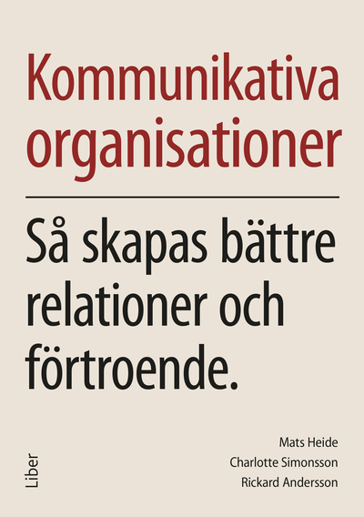
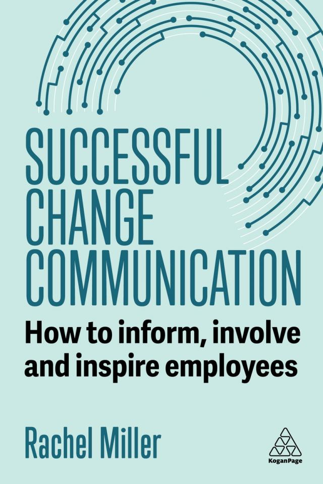
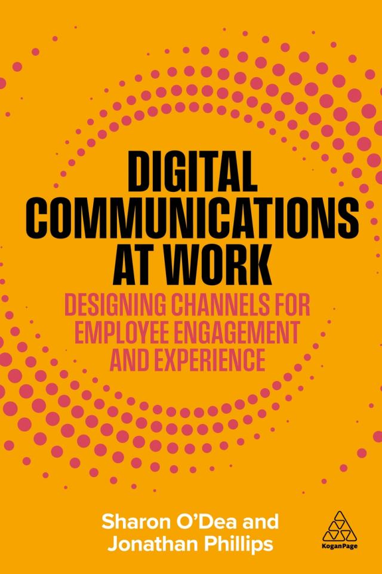
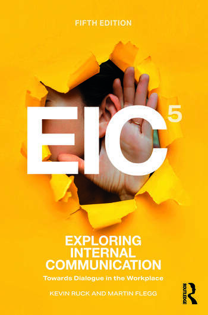
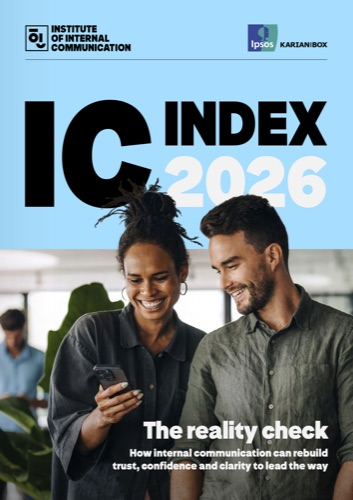
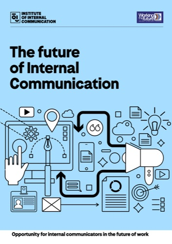
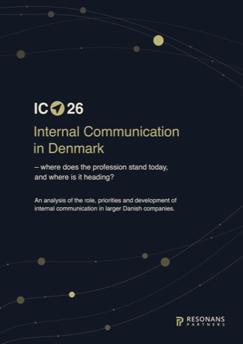

A list of publications by practitioners and researchers based in Europe in 2026 — books, industry reports, and academic journal articles on internal communication.

Heide, M., Simonsson, C., and Andersson, R. — 2026
Liber

Miller, R. — 2026
Kogan Page

O'Dea, S. and Philips, J. — 2026
Kogan Page

Ruck, K. and Flegg, M. — 2026
5th Edition, Routledge

IoIC — 2026


Resonans Partners — 2026
OAK Engage — 2026
The following list of academic journal articles emphasises the increasing volume of research being conducted in Europe. Articles are shown in alphabetical order of authors.
Brugman, B. C. and Groten, M. — 2026
Corporate Communications: An International Journal
Cuenca-Fontbona, J., Estanyol, E. and Echaburu-Mulet, B. — 2026
International Journal of Strategic Communication
Dahlen, O. P. — 2026
Corporate Communications: An International Journal
Denner, N., Liebold, C., Viererbl, B and Koch, T. — 2026
Corporate Communications: An International Journal
Gode, H. E. and Madsen, V. T. — 2026
International Journal of Business Communication
Hagelstein, J., Wahl, I., Stranzl, J., Einwiller, S. and Ruppel, C. — 2026
Journal of Communication Management
Heide, M. and Simonsson, C. — 2026
Corporate Communications: An International Journal
Holster, E., Nikolic, M. and Heide, M. — 2026
Corporate Communications: An International Journal
Koch, T., Haber, S., Denner, N. and Viererbl, B. — 2026
Journal of Communication Management
Miller, V. D., Shank, S. E., Jr, Johansson, C. and Grandien, C. — 2026
International Journal of Strategic Communication
Ned, N-S., Wahl, I. and Einwiller, S. A. — 2026
Journal Of Marketing Communications
Ravazzani, S., Jin, Y., Conti, S., Rachwalski, A. and Robinson, S. G. — 2026
Journal of Communication Management
Bouncing Along: Exploring dynamic internal narratives and interactions that enhance organisational resilience in a permacrisis world
Ruck, K., Madsen, V. and Borucka, A. — 2026
EUPREA Congress Short-Length Paper. Available from the authors.
Sinitsyna, E. and Argade, P. — 2026
International Journal of Organization Theory & Behavior
Sossini, A. — 2026
Journal of Communication Management
Stranzl, J., Mazzei, A., Simonsson, C. and Verčič, A. T. — 2026
Verčič, A. T. and Vokić, N. P. — 2026
Public Relations Review
Verčič, A. T. and Verčič, D. — 2026
Institute for Public Relations (IPR)
Verčič, A. T. and Verčič, D. — 2026
Journal of Public Relations Research
Wahl, I. and Einwiller, S. A. — 2026
Public Relations Review
Wahl, I. and Einwiller, S. A. — 2026
Journal of Communication Management
Wahl, I., Einwiller, S. A. and Bartels, J. — 2026
Management Communication Quarterly
Wahl, I., Einwiller, S. A. and Johansen, W. — 2026
International Journal of Business Communication
Wahl, I., Siegel, M. and Einwiller, S. — 2026
International Journal of Business Communication
Wang, Y., Ravazzani, S. and Anton, A. — 2026
Journal of Communication Management
Wuersch, L., Neher, A., Peter, M.K., Maley, J.F. and Wong, A. — 2026
International Journal of Business Communication
Join the network for new publications, event invitations, and research updates from ICRH Europe in your inbox.
Join the network